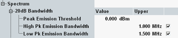
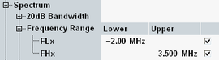
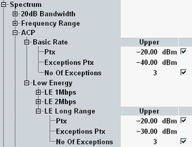
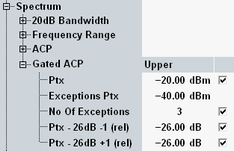

The conformance requirements are described in "Spectrum Requirements"; for a detailed description of the results refer to "Multi-Evaluation Measurement Results".

- "Peak Emission Threshold": The user-defined threshold value for "high" TX power: if the peak emission within a burst is equal or higher than this threshold, then the "High Pk Emission Bandwidth" limit applies, otherwise the "Low Pk Emission Bandwidth" limit applies.
- "High Pk Emission Bandwidth": 20 dB bandwidth limit for "high" peak emission bursts
- "Low Pk Emission Bandwidth": 20 dB bandwidth limit for "low" peak emission bursts
The default settings correspond to the values specified in the transmitter test TP/TRM/CA/BV-05-C ("TX Output Spectrum – 20 dB Bandwidth").
Remote command:
- Lower limit for the lowest frequency within the measured range
- Upper limit for the highest frequency within the measured range

The (ungated) ACP measurement is available for BR and LE bursts.
Option R&S CMW-KM611 is required for LE 1M PHY (uncoded). For LE 2M PHY and LE coded PHY, option R&S CMW-KM721 is also required.
- "PTx": Upper limit for the adjacent channel power in 1 MHz channels fTX ± 2 MHz
- "Exceptions PTx": Upper limit for the adjacent channel power in 1 MHz channels fTX ±3 MHz, fTX ±4 MHz, ...
- "No. of Exceptions": Maximum number of tolerable exceptions, i.e. channels fTX ±3 MHz, fTX ±4 MHz, ... whose power is above "Exception PTx", but below "PTx".
Ticking the check box activates the "Exceptions PTx" limit in 1 MHz channels fTX ±3 MHz, fTX ±4 MHz, ... with "No. of Exceptions" tolerable exceptions (per statistic cycle).

Upper limits for the measurement results which characterize the in-band spurious emissions.
- "PTx, Exceptions PTx, No. of Exceptions": see ACP description for BR and LE
- "PTx–26dBm –1 (rel)": Maximum value of the relative PTx–26dBm in channel –1
- "PTx–26dBm +1 (rel)": Maximum value of the relative PTx–26dBm in channel +1